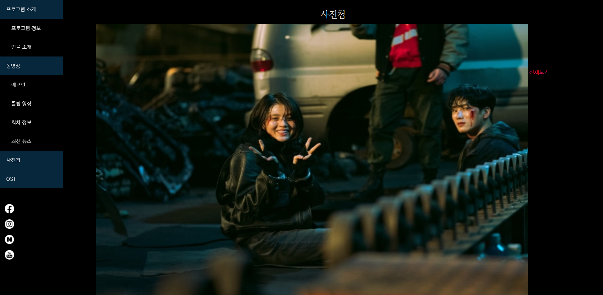

MyName Website
"2021.11.25. ~ 2021.12.01."
MyName Website
"2021.11.25. ~ 2021.12.01."
넷플릭스 드라마 마이 네임을 홈페이지로 제작하였습니다. 드라마의 분위기를 생각하여 전체적으로 검은색과 어두운 빨간색을 주로 사용하였습니다.
원페이지로 구성되어 있으며, 모바일 사용자에 맞게 반응형 홈페이지로 제작되었습니다.
왼쪽의 메뉴를 클릭하면 해당 섹션으로 이동하며,
예고편의 영상, 회차 정보의 전체보기, 사진첩의 각 사진을 클릭하면 모달창이 나타납니다.
